Unstructured on-site interpretation
Visitors can pass through the area without a clear route, staged interpretation, or feedback that helps them connect individual landmarks with the wider cultural context.
A mobile HCI concept for Suzhou Maple Bridge that uses guided navigation, AR prompts, AI-supported interpretation, and fragment collection to make heritage content easier to access on site.
Maple Bridge carries poetic, canal, and urban memory, but on-site interpretation can be difficult to use while visitors are moving through the site, managing language barriers, or deciding how much time to spend.
Visitors can pass through the area without a clear route, staged interpretation, or feedback that helps them connect individual landmarks with the wider cultural context.
International visitors need concise guidance and language support, while curious learners need an easy way to ask follow-up questions without leaving the route.
The proposed concept links route guidance, AR prompts, AI dialogue, photo check-ins, fragment collection, and progress feedback in one continuous mobile journey.
The problem framing focused on practical barriers in outdoor heritage interpretation: visitors are mobile, attention is limited, and static information does not always support different levels of interest.
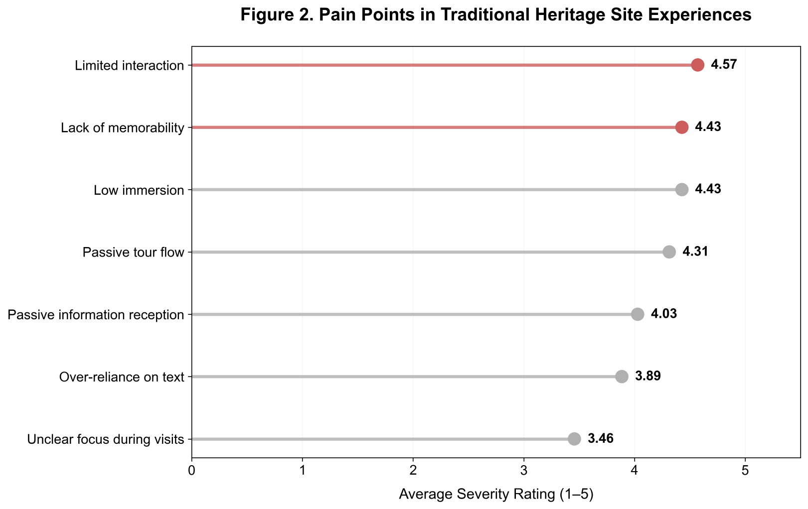
Text panels can provide factual information, but they offer limited support for staged exploration or situated interaction.
Long local descriptions can make cultural context difficult to access for visitors with limited Mandarin.
Passive reading gives visitors few opportunities to ask questions, make choices, or receive feedback.
Visitors have limited visibility of what they have completed or what remains to explore.
Casual tourists and deeper learners require different levels of explanation, time commitment, and cultural detail.
The research phase reviewed literature on AR heritage, conversational AI, gamification, and location-based storytelling, then compared these themes with existing cultural and AR tourism products.
AR heritage research suggested that visual overlays can connect digital information to a physical viewpoint, informing the use of site-based AR prompts.
Conversational AI literature informed the AI narrator concept, especially for follow-up questions during the route.
Gamification research informed fragment collection as a light progress mechanism linked to movement and interpretation.
Benchmarking showed useful examples of maps, AR, and rewards, but fewer examples combining them into one continuous on-site cultural journey.
The prototype needed to support a short guided route, optional deeper explanation, and visible progress without making heritage learning feel separate from the site visit.
The team reviewed work on AR-enhanced heritage, conversational AI for cultural collections, gamification in cultural heritage, outdoor location-based storytelling, and broader AR/VR/MR cultural heritage systems.
Google Arts & Culture, Wintor AR Tours, Dunhuang Mogao Grottoes Digital Guide, and Pokemon GO heritage events were used to compare navigation, AR interaction, reward structures, and cultural depth.
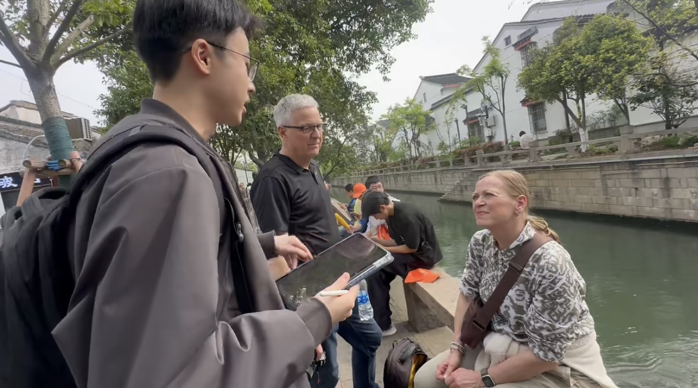
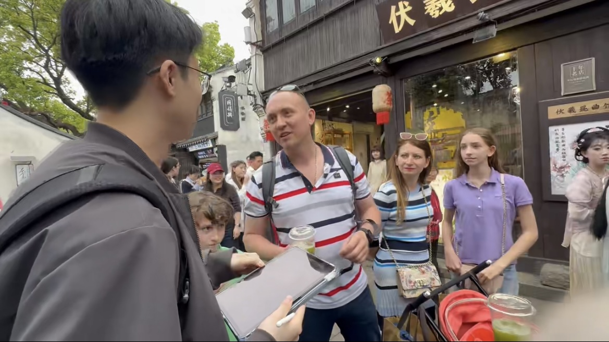
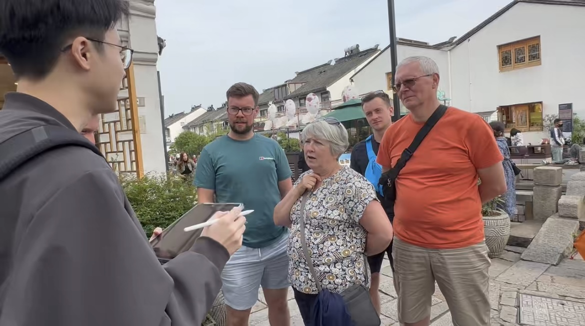
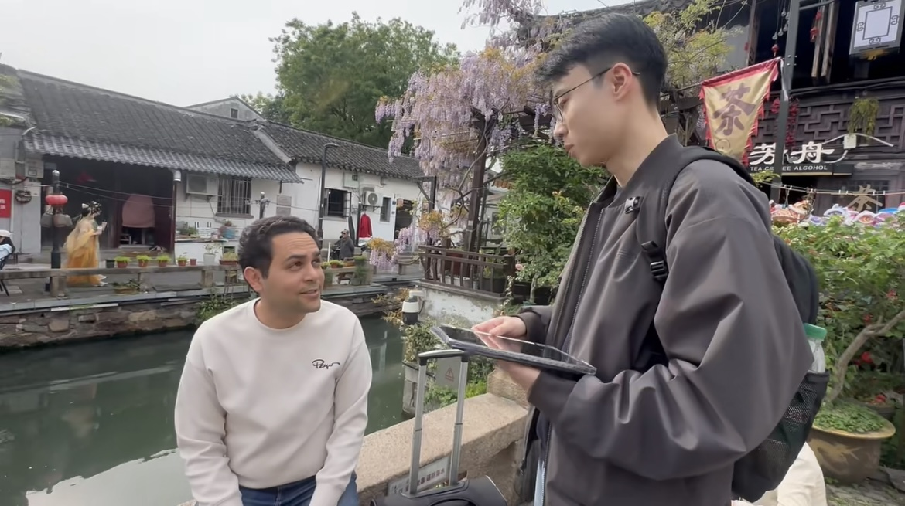
Detailed profile information is kept inside the persona boards, so the page focuses on the two primary visitor types used in the journey design.
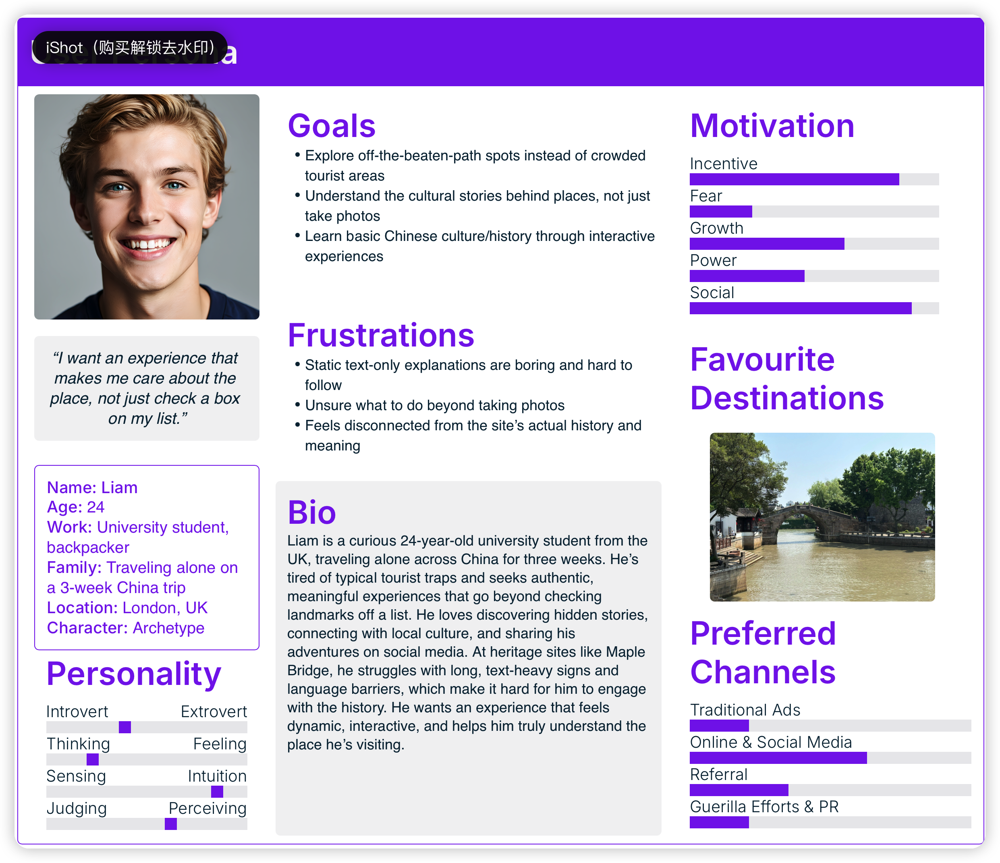
A solo backpacker with limited Mandarin. He needs a time-efficient route, English explanation, and enough context to understand why Maple Bridge is culturally significant.
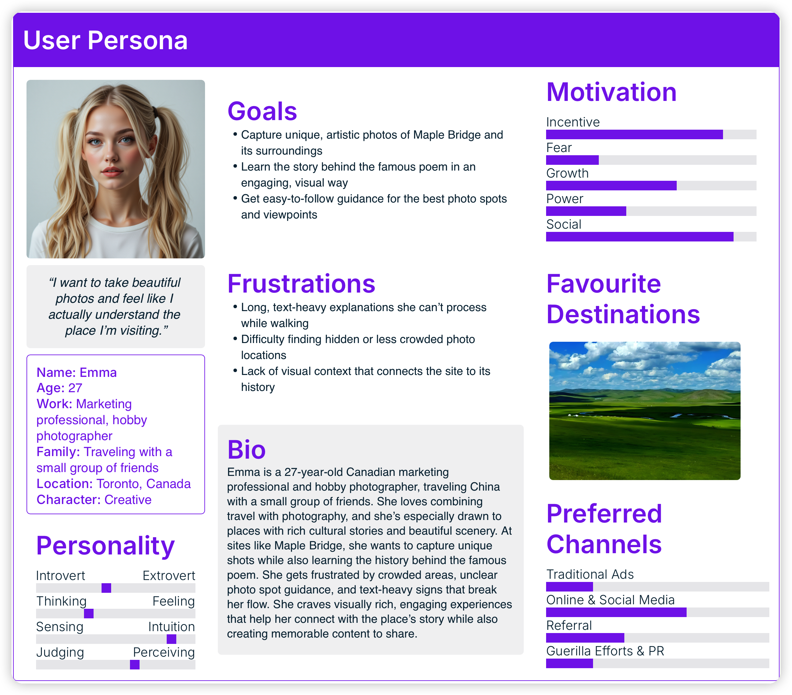
A marketing professional and photographer travelling with friends. She needs guidance toward photo opportunities and concise cultural context that can be experienced without interrupting the visit.
The map follows Liam, a primary international tourist persona, across the Maple Echoes journey. It links each stage to user actions, thoughts, emotions, pain points, and the feature response.
The redesigned journey follows a first-time international visitor from opening Maple Echoes to sharing a completed cultural route. Each stage connects what the user does, what they need, where friction appears, and how the prototype responds.
| User need | Design requirement | Feature response |
|---|---|---|
| Avoid missing key landmarks | Provide situated navigation and clear next-step cues | Interactive map, route guidance, location-based story points |
| Understand cultural content quickly | Make interpretation visual, concise, and language-accessible | AR prompts and short AI-supported story explanations |
| Ask deeper questions | Support flexible inquiry and layered explanations | AI narrator interface with follow-up questions |
| Understand what remains to explore | Make completion visible and encourage continued exploration | Photo tasks, cultural fragments, progress state, leaderboard concept |
Crazy Eights was used to explore possible combinations of map navigation, AR prompts, AI dialogue, photo tasks, and collection mechanics before the team compared three concept directions.
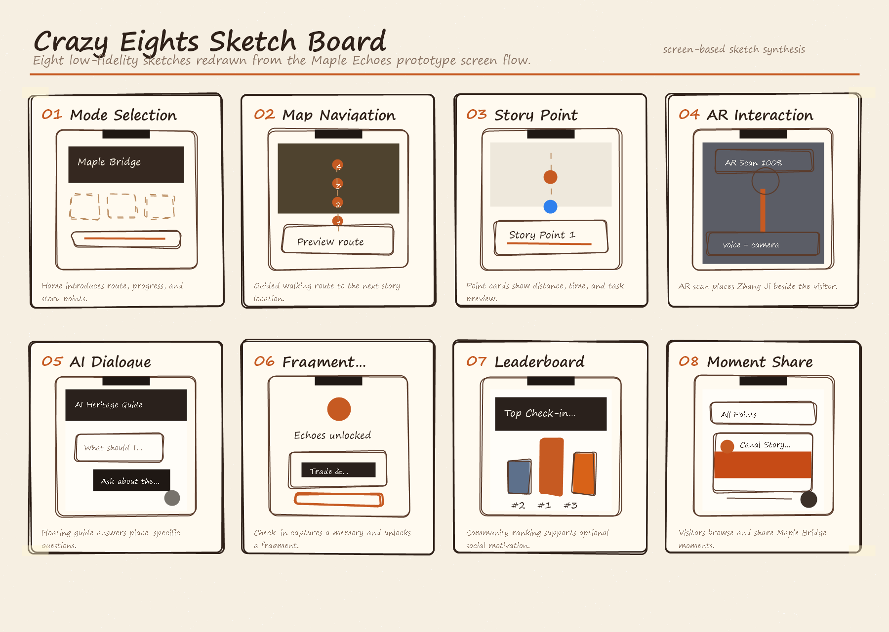
A map-based guide with prepared text and photos. It is feasible and device-friendly, but it does not address the need for interaction or progress feedback.
A location-based AR experience focused on visual interpretation. It supports situated media, but offers limited support for questions, progression, or deeper cultural inquiry.
The selected direction combines location-based story points, AR prompts, AI-supported explanation, photo check-ins, fragments, and community ranking.
The walkthrough follows the updated prototype sequence from the home entry and map preview to guided route, AR/AI interaction, community moments, fragment summary, and leaderboard.
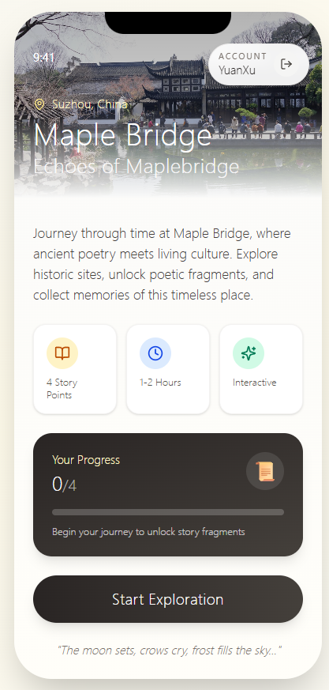
01 Home Entry Users see the route promise, time estimate, progress state, and start the exploration.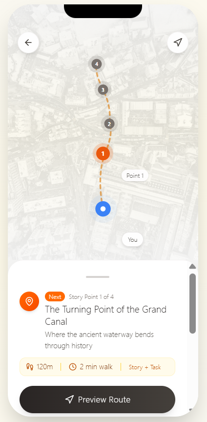
02 Map Preview The route shows four story points and the next destination before walking begins.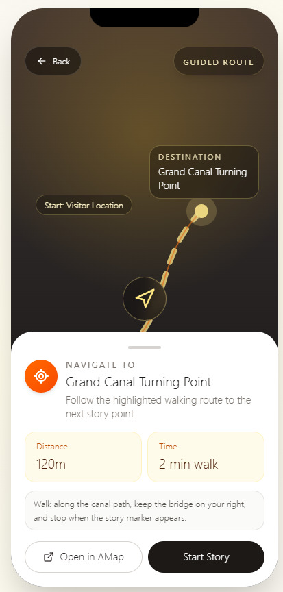
03 Guided Route Navigation gives distance, walking time, and a clear prompt to start the story.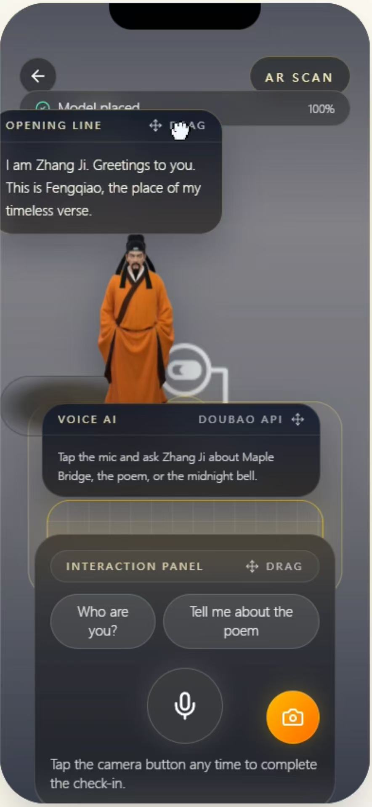
04 AR Scan AR introduces Zhang Ji, voice AI, and a camera action for the check-in task.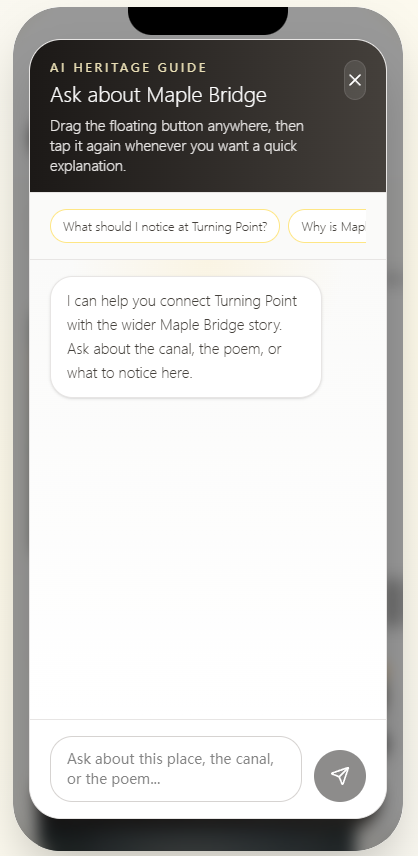
05 AI Guide Visitors can ask quick questions about the canal, the bridge, and the poem.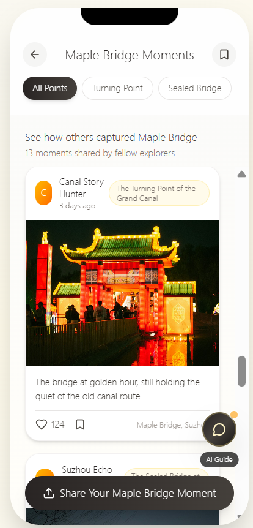
06 Moments Community photos turn the visit into a shareable, social memory layer.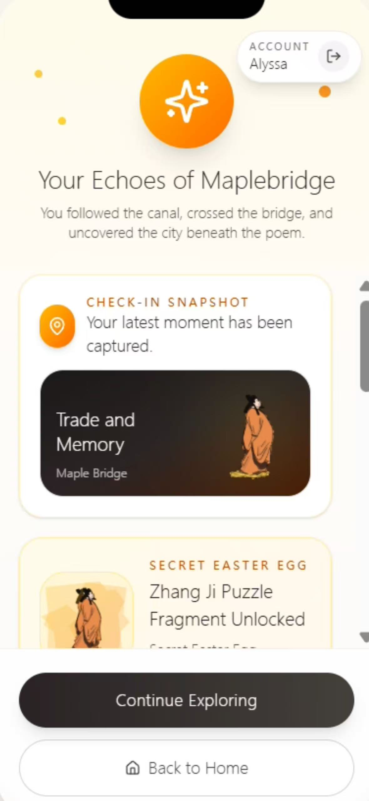
07 Echoes Summary The completed check-in unlocks a fragment and reinforces progress feedback.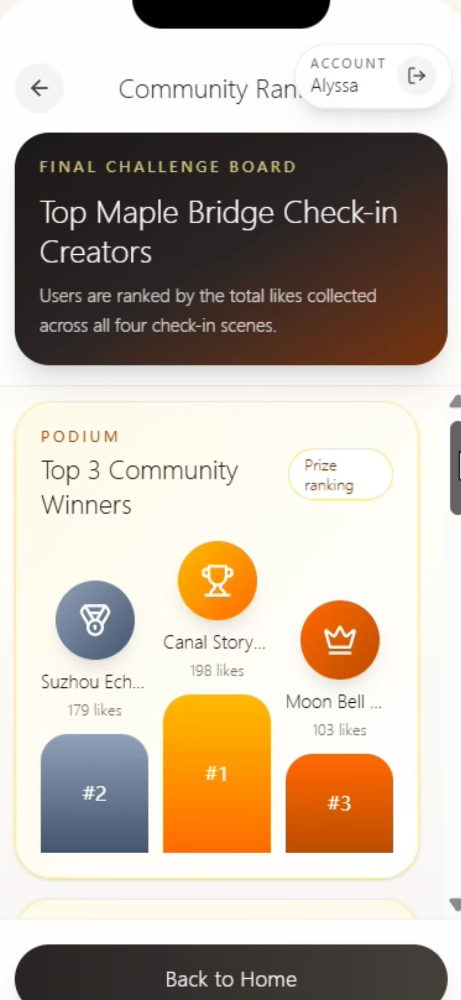
08 Ranking The final challenge board supports optional comparison and continued exploration.The implementation section describes how a future version could organise mobile UI, navigation, AR and AI services, and progress data. It is a system model for the prototype, not evidence of a production-ready deployment.
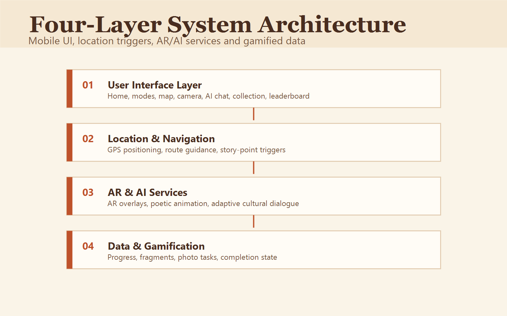
Defines the proposed screens: home entry, map preview, guided route, AR camera view, AI dialogue, moments, fragment summary, and ranking.
Specifies the role of positioning, route guidance, and story-point activation around Maple Bridge.
Describes the intended AR prompts and AI-supported explanations during the guided route.
Outlines progress states, collected fragments, photo task records, and ranking logic for the prototype.
2361550. UI design, interface layout, high-fidelity prototype, live system implementation, web app design, visual refinement, and low-fidelity prototype styling.
2363085. User research, journey map, pain point analysis, website framework, documentation, poster production, portfolio production, and video production.
2359858. UI design, project planning, high-fidelity prototype, live system implementation, web app design, system architecture, AR interaction logic, map navigation, and technical prototype planning.
2360088. User research, persona development, requirement organisation, usability testing, feedback collection, and reflection.
The poster records aggregate participant evidence from 35 users and early prototype evaluation results. The coursework alpha test with 3 users then checked the full flow from home entry and map preview to guided route, AR scan, AI guide, moments, fragment summary, and ranking.
| Feedback / problem | Evidence from testing | Design change | Design implication |
|---|---|---|---|
| Heritage visits needed stronger interaction and immersion. | Poster Figure 1 rated limited interaction 4.57 and low immersion 4.43; Figure 3 showed 23/35 participants preferred the AR + AI + fragment concept. | The revised screen makes the AR scan state, voice AI guide, and task feedback more visible in the same interface. | The change makes the key interaction point more explicit and turns passive viewing into guided AR/AI participation. |
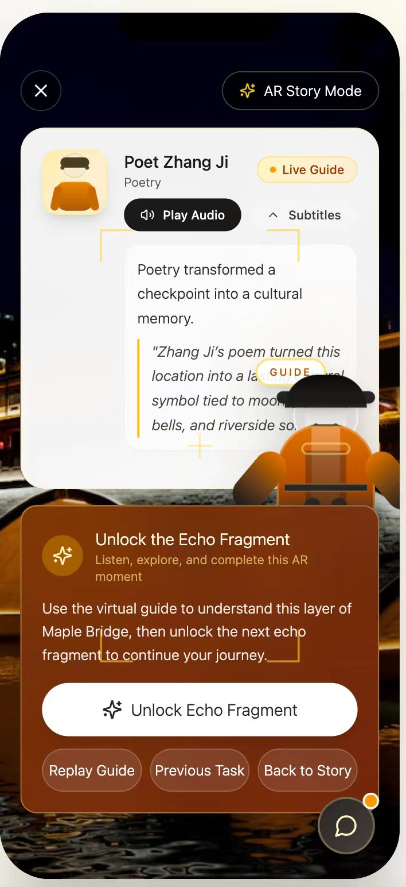
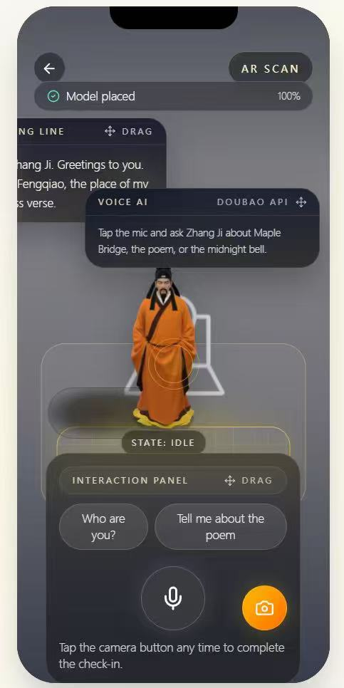
Because the concept uses location, camera interaction, and generative AI, the design needs to balance engagement with cultural accuracy, data minimisation, and clear limits on AI-generated interpretation.
Guided routing and multilingual explanation are intended to reduce barriers for visitors without prior cultural knowledge or Mandarin fluency.
The privacy principle is to use real-time location only for on-site triggering and avoid permanent storage of personal location data.
AI should support adaptive storytelling, but responses need content boundaries, review, and clear connection to verified site knowledge.
Further work should expand multilingual content, refine outdoor trigger reliability, and evaluate the prototype with a larger and more diverse participant group.
This section maps the coursework checklist to the current submission materials. Items that depend on the final system or video are stated transparently rather than overclaimed.
| Coursework requirement | Current evidence in this portfolio | Status |
|---|---|---|
| Hosted process portfolio | Root index.html prepared for GitHub Pages, with links to detailed Markdown process documents. |
Ready for GitHub Pages |
| User research, personas, journey, and requirements | Research insights, field research photos, Liam and Emma personas, journey map, pain points, and requirement-to-feature mapping. | Included |
| Ideation and alternatives | Crazy Eights board, Concept A/B/C comparison, and rationale for selecting the guided AR/AI fragment-collection concept. | Included |
| Prototype evidence | Figma prototype link and mobile walkthrough screens showing home entry, map preview, guided route, AR scan, AI guide, moments, fragment summary, and ranking. | Included as prototype evidence |
| System implementation evidence | Four-layer architecture diagram, technical plan, and hosted live system URL: https://cpt208-src.vercel.app. | Included |
| Evaluation and iteration | Usability testing with 3 users, poster feedback evidence, rating summary, and AR/AI before/after iteration screenshots. | Included |
| Video demo | No MP4 is embedded in the portfolio yet. | Add final 2-minute MP4 link before submission |
The project uses AI assistance for portfolio production and coding support, while the research findings, design rationale, and human-centric justification remain based on the group’s own project materials.
AI assistance was used to scaffold and refine the static portfolio website. Verification focused on checking that image paths resolved, responsive CSS avoided horizontal overflow, project claims remained aligned with the provided documentation, and the page did not overstate implementation maturity.